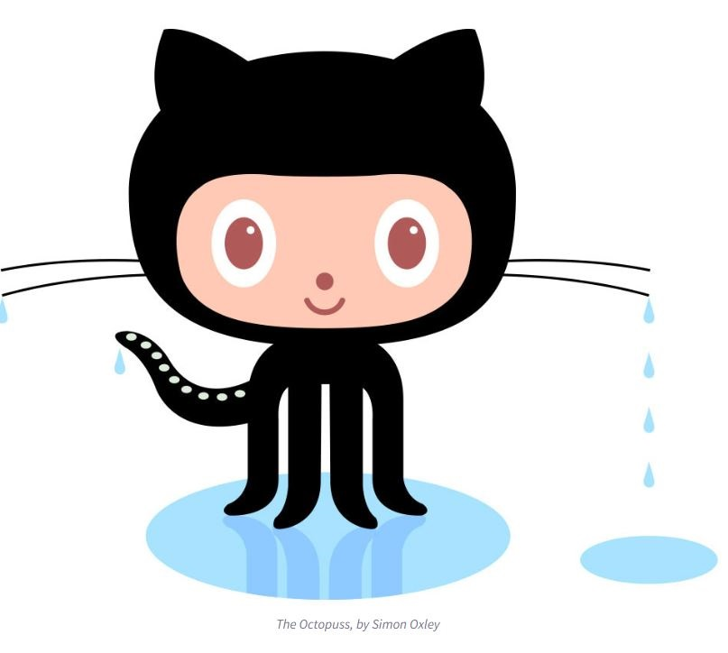

All About Github
Question and Answers:
- Q: what is a version control system?
- A: a version control system tracks changes to a file or a set of files overtime
- Q:What is Git?
- A: Git is a control system used to track changes in source code during software development.
- Q:What is Github?
- A:GitHub is a platform for hosting code that allows for version control and collaboration
- Q:What is the difference between Github and Git?
- A:Git is a version control system used for tracking changes in code, while GitHub is a web-based platform that provides hosting for Git repositories and collaboration tools for teams.
- Q:Who started Github and how was it started?
- A:GitHub was started by Tom Preston-Werner, Chris Wanstrath, and PJ Hyett in 2008 to provide a platform for easier collaboration and sharing of code among developers using Git.
- Q:What company owns it?
- A:Microsoft
- Q:How much does a Github account cost?
- A:Github is free but has paid options based on how much data you are storing/how many people are involved on projects
- Q:What is the octocat?
- A:The Github Mascot

Git/Github Terms:
- Repository: A location where project files and data are stored and managed using version control software like Git.
- Commit: Saving changes to a Git repository
- Fork: A copy of a repository created to experiment or develop changes independently from the original project.
- Push: Sending local commits to a remote repository
- Pull Requests: Proposals to merge changes from one repository branch into another
- Workflows: Procedures followed when using Git and GitHub for project development
- Issues: Trackers for bugs, tasks, or feature requests in a project, providing a centralized way to report and discuss problems.
- Blame Button: A feature in Git and GitHub showing the commit history of a file
|